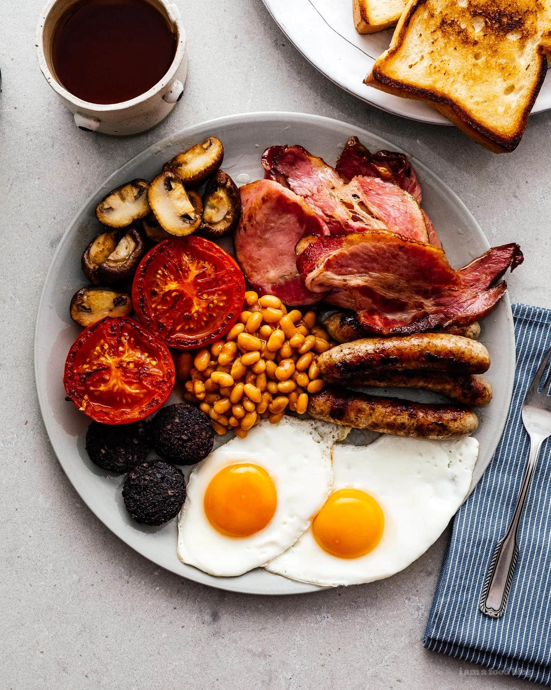

Second Breakfast

"We've had one, yes. What about second breakfast?"
Pippin
"I don't think he knows about second breakfast, Pip."
Merry
Ingredients
- Sausages
- Back Bacon
- Eggs
- Tomatoes
- Mushrooms
- Toast
- Beans
Preparation
- Open the can of beans and warm in a small pot over low heat, stirring occasionally.
- While the beans are warming, cook the sausages over medium to medium low, until browned and cooked through, turning as needed. Push the sausages to one side and add the bacon and fry, flipping as needed.
- In another pan, sear the mushrooms until brown and caramelized. Move to one side. Add the tomatoes, cut side down and sear.
- Move the meats from the pan and fry the bread in the drippings until golden and crisp. Cook the eggs in the pan that the mushrooms and tomatoes were in.
- Scoop the beans in the middle of the plate then add the bacon at 1-2 o’clock, add the sausages at 3 o’clock, then the eggs at 6. If you have blood pudding, pop that on at 8 o’clock and then fill the rest of the plate with the tomatoes at 11 o’clock and the mushrooms at 12. Fried bread can get tucked in wherever or placed on a side plate. Enjoy!
Source